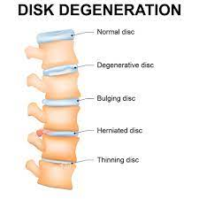

Degenerative disc disease

SYMPTOMS:
The most common symptoms of degenerative disk disease are neck pain and back pain. You may experience pain that:
-
Comes and goes, lasting for weeks or months at a time.
-
Leads to numbness or tingling in your arms or legs.
-
Radiates down your buttocks and lower back.
-
Worsens with sitting, bending or lifting.
-
CAUSES
Spinal disks wear down as a normal part of aging. Especially after age 40, most people experience some disk degeneration. However, not everyone experiences pain
DIAGNOSIS
Your healthcare provider may use imaging scans such as X-ray, CT or MRI. These tests can show your healthcare provider the state and alignment of your disks. Your provider may also conduct a physical exam to check your:
- Nerve function: Your provider may use a reflex hammer to check your reactions. Poor or no reaction could mean you have damaged or compressed nerves.
-
Pain levels: Your provider may touch or press on specific areas of your back to measure your pain levels.
-
Strength: Muscle weakness or shrinking (atrophy) could mean you have nerve damage or degenerated disks
TREATMENTS
Usually, your healthcare provider will recommend noninvasive treatment options first. Your treatment may include:
-
Physical therapy: Participating in strengthening and stretching exercises with a trained healthcare provider.
-
Medications: Taking nonsteroidal anti-inflammatory drugs (NSAIDs), muscle relaxers or steroids.
-
Steroid injections: Injecting medicine near your spinal nerves, disk or joints to reduce inflammation and pain.
-
Radiofrequency neurotomy: Using electric currents to burn sensory nerves and prevent pain signals from reaching your brain.